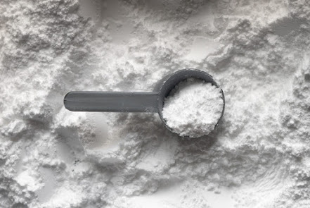

المقدمة.
يمكن أن يبدو الكرياتين ، لمن هم غير مدركين ، مخيفًا بعض الشيء وغالبًا ما يتم وصفه بشكل خاطئ بأنه مشابه لبعض المواد الأكثر خطورة. ولكن مثل العديد من الأشياء التي يتم ارتكابها على internet ، استسلمت معلومات الكرياتين للزوال المؤسف للمعلومات الخاطئة. لحسن الحظ ، يمكن أن يؤدي الغوص السريع في الأدبيات العلمية إلى توضيح بعض الالتباس.
ما هو الكرياتين ؟
أولاً ، تحليل سريع لماهية الكرياتين. الكرياتين هو حمض أميني طبيعي يصنعه الجسم من اثنين من الأحماض الأمينية الأخرى ، الأرجينين والجليسين. معظمها يترأس عضلاتنا. الكرياتين له دور في نظام ATP-PCr ، وهو النظام المسؤول عن أول 10 إلى 15 ثانية من إنتاج الطاقة أثناء النشاط البدني. يجدد الكرياتين بشكل أساسي هذا النظام أثناء الراحة ، موضحًا شعبيته بين الرياضيين الذين يستخدمون دفعات من السرعة والقوة. بالنسبة لعشاق اللياقة البدنية ، تعني مكملات الكرياتين عمومًا إضافة بضعة أرطال أو العدات إلى تمرينك. وهو أمر عظيم.
هل الكرياتين آمن..؟
ولكن بقدر فائدة الأداء هذه ، ما مدى أمان الكرياتين حقًا؟ لحسن الحظ ، ربما يكون الكرياتين هو المكمل الغذائي الأكثر دراسة في العالم ، مع أكثر من ألف دراسة تغطي آثاره. ومع كل هذا الكنز الدفين من البيانات ، يبدو أن العلامات تشير إلى أن مكملات الكرياتين آمنة. وفقًا للنتائج التي توصلت إليها مجلة الجمعية الدولية للتغذية الرياضية ، بعد القيام بأعمال غربلة العلم ، وجدوا أن دراسات الكرياتين قصيرة وطويلة المدى تتكون من جرعات مختلفة ، ومستويات لياقة ، وفئات عمرية ، بما في ذلك الرضع والأطفال. المراهقين ، لا تظهر عليهم مخاطر صحية سلبية مع مكملات الكرياتين. لا إصابات متزايدة ، لا جفاف ، تقلصات ، قصور كلوي ، أو حتى اضطراب في المعدة. التأثير الجانبي الوحيد المحتمل هو زيادة طفيفة في الوزن يُحتمل أن يرجع إلى احتباس الماء.
علاقة الكرياتين بالصلع..!
وبالنسبة لأولئك الذين يتساءلون ، فإن التأثير الجانبي الدائم للصلع هو أيضًا ، في الغالب ، غير صحيح. قد يكون هناك ارتباط بين الكرياتين و DHT ، وهي مادة مرتبطة بالصلع ، ولكن لا يوجد اتصال مباشر. وهي تتعلق فقط بالأفراد المعرضين للإصابة بالصلع في المقام الأول.
فوائد الكرياتين.
نحن نعلم الآن أن الكرياتين آمن إلى حد ما ، لكن البيانات الهائلة تظهر أيضًا أن الكرياتين لديه الكثير من الفوائد الصحية الإضافية. تشمل هذه الفوائد على سبيل المثال لا الحصر ، تحسين أداء التمرين بشكل واضح ، وتحسين الوقاية من الإصابات وإعادة التأهيل ، وتحسين التعافي بعد التمرين ، وتحسين مكافحة الشيخوخة ، وحتى الحماية المحسنة ضد أمراض مثل مرض باركنسون وضمور العضلات. لحسن الحظ ، يمكننا الحصول على معظم الكرياتين ببساطة من طعامنا ، وخاصة في اللحوم الحمراء والمأكولات البحرية. ومع ذلك ، غالبًا ما يُقترح المكملات على أي حال لأننا لا نخزن الكثير من الكرياتين في أجسامنا. الجرعة النموذجية هي ما يقرب من 2 إلى 5 جرام من الكرياتين المكمّل يوميًا.
الخاتمة.
وفي النهاية ، مرة أخرى ، بغض النظر عما قد تسمعه في مكان آخر ، بالنسبة للسكان الأصحاء ، فإن الكرياتين آمن بالتأكيد. اسمحوا لي أن أعرف كيف كان الكرياتين بالنسبة لك. هل يناسبك أو ربما واجهت مجموعة من الآثار الجانبية الخاصة بك؟ اسمحوا لي أن نعرف في التعليقات. إذا استمتعت بهذه المقالة ، فيرجى مشاركتها مع أصدقائك المحبين للكرياتين.